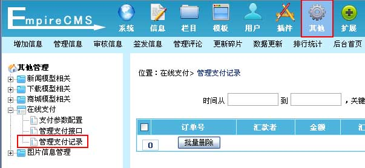

| 一、网银支付介绍： |
| 帝国CMS默认内置“支付宝”、“财付通”、“网银在线”三种接口，同时用户还可以自己增加支付接口。 |
| 二、支付参数配置： | ||||
| (一)、登录后台，单击“其他”菜单，选择“支付参数配置”子菜单，进入支付参数配置界面： | ||||
| (二)、进入支付参数配置界面： | ||||
|
| 三、网银支付接口管理与配置： | ||||||||||||||||
| (一)、登录后台，单击“其他”菜单，选择“管理支付接口”子菜单，进入管理支付接口界面： | ||||||||||||||||
| (二)、进入管理支付接口界面，点击对应接口的“配置接口”，进入支付接口参数配置界面： | ||||||||||||||||
| (三)、进入支付接口参数配置界面： | ||||||||||||||||
|
| 四、管理支付记录： |
| (一)、登录后台，单击“其他”菜单，选择“管理支付记录”子菜单，进入管理支付记录界面： |
|  |
| (二)、进入管理支付记录界面： |
| 五、新增支付接口说明： |
| (一)、新增支付接口的步骤： |
| 1、先制作好支付接口文件（/e/payapi/接口目录/），比如： (1)、先复制/e/payapi/目录下的默认接口目录，比如复制“财付通”，然后目录名称用“diypay”，接着修改接口文件： (2)、然后修改接口目录里的文件： |
| 2、然后进数据库往phome_enewspayapi表增加接口记录：paytype字段填写新增接口的目录名； |
| 3、完成。 |